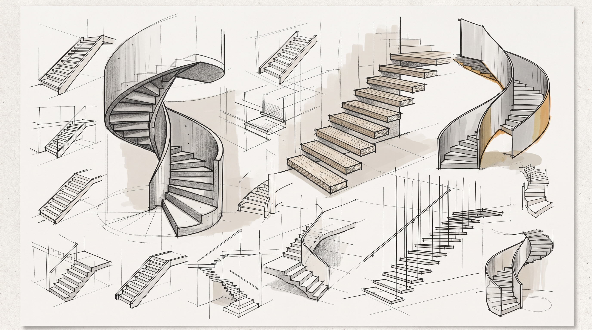

1. Planteamiento estructural
El diseño de una escalera comienza por definir qué elementos reciben las cargas y cómo las transmiten a la estructura principal. Una losa inclinada, los peldaños, los descansos, las zancas y sus apoyos pueden participar de manera distinta según la geometría y la conexión construida.
Antes de interpretar resultados, define la geometría, la luz de análisis, la continuidad y las condiciones de apoyo. El modelo debe representar la trayectoria resistente prevista; no basta con que produzca diagramas o converja numéricamente.
Criterio central: contrasta siempre el modelo con los planos y con el detalle constructivo. Una hipótesis de apoyo o de carga distinta de la realidad puede cambiar de forma importante las solicitaciones y la deformada.

Geometría, apoyos y dimensiones de referencia.
2. Tipologías y camino de cargas
Escalera recta con zancas o vigas laterales
Los peldaños o la losa de la rampa reciben las cargas de uso y las transfieren a los elementos longitudinales de apoyo. Las zancas transmiten las reacciones hacia vigas, muros o columnas.
La idealización puede ser bidimensional o tridimensional. Debe corresponder a la dirección resistente y al ancho tributario adoptado.
Escalera en U con descanso
La respuesta depende de la continuidad entre rampas y descanso, y de si el descanso cuenta con apoyo intermedio. Un muro o una viga de apoyo puede reducir la luz efectiva y modificar momentos y deflexiones.
Si el descanso no tiene apoyo directo, rampas y descanso pueden trabajar como un conjunto continuo; el quiebre y sus conexiones requieren atención especial.
Seguir la carga hasta el sistema resistente
- Acciones aplicadas: peso propio, peldaños, acabados, barandas y carga viva.
- Elemento que recibe la carga: peldaño, losa inclinada o descanso, según el sistema.
- Elementos de transferencia: zancas, vigas, muros o losas conectadas.
- Apoyos finales: elementos que transmiten las acciones a la estructura y, finalmente, a la cimentación.
En cada etapa, conserva unidades y convenciones consistentes. Indica si la carga distribuida está expresada por área, por longitud inclinada o por proyección horizontal, y evita mezclar bases de medida.

Comparación de tipologías y rutas de transferencia de cargas.
La aplicación es una herramienta de análisis y discusión académica. No constituye por sí sola una memoria de cálculo ni una verificación normativa completa.
4. Puntos críticos de diseño
Flexión y momento
Ubica los máximos positivos y negativos y relaciona cada zona con la cara traccionada y el refuerzo requerido. La condición de apoyo y la continuidad determinan dónde aparecen los momentos críticos.
Verifica la resistencia comparando la resistencia de diseño con la demanda: $$\\phi M\_n \\geq M\_u$$.
No reduzcas la demanda mediante el factor de resistencia. Diseña y detalla el acero para las regiones de momento positivo y negativo que correspondan al modelo.
Cortante
Revisa la demanda en apoyos, cambios de dirección, conexiones y zonas de transferencia. Compara la demanda con la resistencia de diseño conforme a la norma y al modelo de sección aplicable.
Si la capacidad resulta insuficiente, evalúa alternativas estructurales —por ejemplo, aumentar el espesor o modificar la luz o el apoyo— y vuelve a revisar peso propio, flexión, cortante y servicio. No supongas que una solución es suficiente sin recalcular.
Deflexión y servicio
Una escalera que cumple resistencia puede presentar deformaciones, fisuración o vibraciones incompatibles con el uso y con los acabados. Revisa la combinación de servicio pertinente, la rigidez efectiva y los efectos diferidos cuando correspondan.
Interpreta la deformada en el contexto del sistema: longitud de referencia, condición de apoyo, sección agrietada y cargas consideradas deben estar identificadas.
Resultados que conviene contrastar
- Equilibrio de reacciones frente a las cargas aplicadas.
- Signos y unidades de axial, cortante y momento.
- Continuidad de los diagramas en los nodos.
- Consistencia entre deformada, apoyos y rigidez.
- Correspondencia entre solicitaciones y disposición del refuerzo.
5. Comportamiento sísmico y mitigación
Una escalera conectada rígidamente entre niveles puede restringir el desplazamiento relativo del edificio y participar en la respuesta sísmica. El tramo inclinado puede desarrollar fuerzas axiales y transmitir acciones a descansos, vigas y columnas.
Cuando un descanso restringe parcialmente una columna, puede reducir su longitud libre de deformación y generar una condición de columna corta. La rigidez y la demanda local pueden aumentar; la respuesta debe evaluarse en el contexto del sistema estructural completo.
Alternativa: permitir desplazamiento
Un apoyo deslizante o una junta puede reducir la transferencia de desplazamientos horizontales, siempre que se resuelvan la estabilidad vertical, la capacidad de movimiento, la seguridad de uso y los detalles de conexión.
Alternativa: incluir la escalera en el análisis
Si la conexión es monolítica, el modelo global debe representar su participación y considerar las acciones que transmite a los elementos adyacentes. Las decisiones de diseño y detallado deben ser coherentes con esa idealización.
Decisión de modelación: no combines una escalera rígidamente conectada en obra con una idealización que suponga que no interactúa con el edificio, sin justificar cómo se resuelve esa diferencia.

Interacción de la escalera con el desplazamiento lateral del edificio.
6. Detallado: errores frecuentes y soluciones
| Problema a revisar |
Consecuencia posible |
Acción de diseño o detallado |
| La luz o los apoyos del modelo no corresponden con los planos. |
Solicitaciones y deformaciones que no representan la estructura construida. |
Definir ejes, caras de apoyo, continuidad y condición de conexión antes de analizar. |
| Acero longitudinal que se dobla siguiendo sin justificación el quiebre cóncavo. |
Concentración de esfuerzos locales, fisuración o desprendimiento del recubrimiento. |
Resolver la continuidad con barras, anclajes y refuerzo local compatibles con el flujo de fuerzas y las disposiciones normativas aplicables. |
| Longitudes de desarrollo, anclajes o empalmes sin especificar. |
Pérdida de transferencia de fuerza entre acero y concreto. |
Indicar longitudes, ubicación y condiciones de anclaje en planos; verificar requisitos normativos. |
| Refuerzo dispuesto sin relacionarlo con la cara traccionada. |
El acero puede no estar ubicado donde el análisis lo requiere. |
Contrastar diagramas de momento, secciones y detalles de refuerzo. |
| Omitir barandas, acabados u otras acciones permanentes. |
Subestimación de cargas y de las solicitaciones de diseño. |
Documentar cargas, unidades, ancho tributario y base de aplicación. |

Detalle del quiebre: continuidad, anclaje y posición del refuerzo.
7. Taller aplicado: referencia de trabajo
El taller integra idealización, análisis, diseño, servicio, comportamiento sísmico y detallado. Use los planos y casos de estudio del curso para desarrollar una propuesta trazable desde la geometría hasta el despiece.
Entregables mínimos: esquema de geometría y apoyos; cargas y combinaciones; modelo y diagramas; verificaciones de flexión, cortante y deflexión; discusión sísmica cuando corresponda; plano de refuerzo con anclajes y detalles del descanso.
- Identifique qué elementos reciben y transfieren las cargas.
- Justifique la luz y las condiciones de apoyo adoptadas.
- Compare los resultados del modelo con el comportamiento esperado.
- Relacione cada zona crítica con el refuerzo y su detalle constructivo.
- Registre las hipótesis, unidades y criterios normativos utilizados.
Ir al Taller aplicado
Material de referencia del curso
Escalera Recta.pdfEscalera U.pdfEscalera U auto.pdf- Reglamento NSR-10 y demás referencias adoptadas en el curso, consultados en su versión aplicable.
Confirme directamente en las fuentes oficiales las disposiciones normativas, combinaciones de carga y requisitos de diseño antes de utilizarlos como criterios definitivos.
Consultas y discusión académica
Use este espacio para preguntas sobre los modelos, las hipótesis y los detalles tratados en clase.